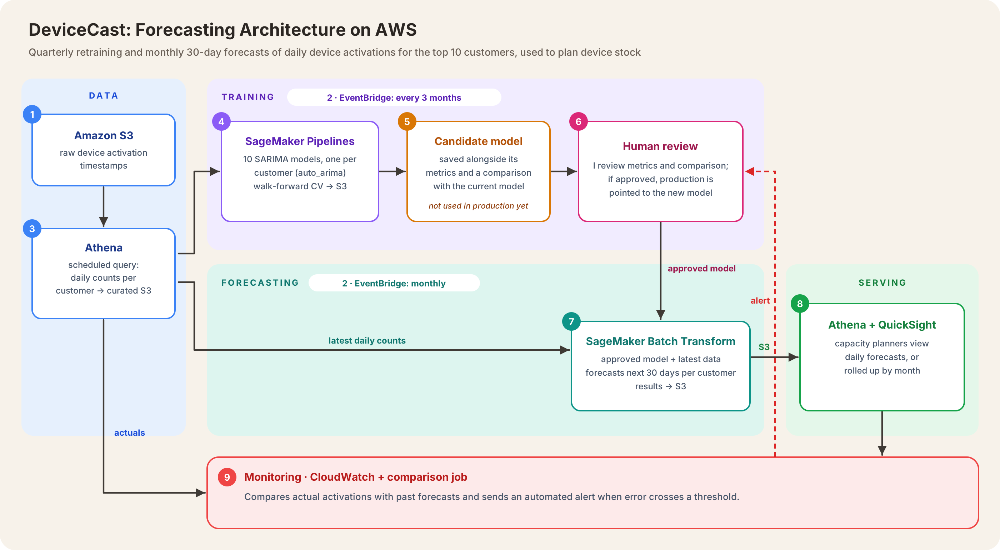
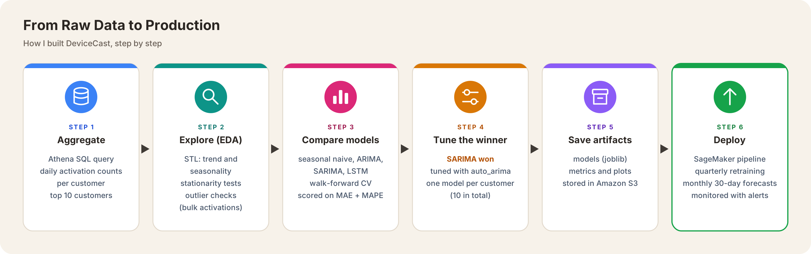
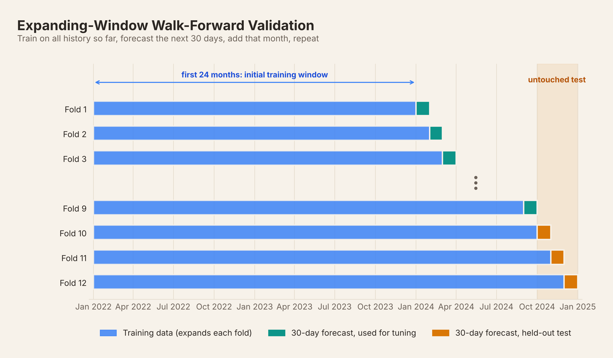

Problem and context
A telecom management company tracked devices for its customers, telecom carriers around the world. For every device, it recorded when it was activated, meaning when it was bought and switched on.
The client wanted to use this history to predict how many devices each customer would activate over the next 30 days, so they could plan device stock ahead of demand: neither running short during peaks nor holding too much stock in quieter periods. They also wanted to understand what drove demand: long-term trends, and seasonal patterns such as holiday peaks.
I built forecasting models for the client’s top 10 customers, each with activation records for around a million devices. The models captured each customer’s trend and seasonality, and the forecasts ran automatically every month.
Architecture diagram

The system runs on AWS.
Data
- Storage. Raw device activation timestamps are stored in Amazon S3.
- Scheduling. Amazon EventBridge triggers the training pipeline every three months and the forecasting job every month.
- Data preparation. A scheduled Athena query aggregates the raw activations into daily counts per customer and writes them to a curated S3 location.
Training (every three months)
- Training pipeline. SageMaker Pipelines reads the curated data, fits one SARIMA model per customer (10 in total) with auto_arima, evaluates them with walk-forward cross-validation, and saves the models (joblib) and their metrics to S3.
- Candidate model. The newly trained model is saved as a candidate, with its metrics and a comparison against the model currently in production. It isn’t used for forecasting yet.
- Human review. I review the metrics and comparison. Only if the new model performs better is production pointed to it; otherwise the current model stays in place.
Forecasting (every month)
- Batch forecast. SageMaker Batch Transform loads the latest data and the approved model, forecasts the next 30 days for each customer, sums the values into a monthly forecast, and writes the results to S3.
- Serving. Capacity planners query the forecasts in Athena or view them in QuickSight, either as daily values or summed by month, to plan device stock.
Monitoring
- Alerts. A comparison job checks actual activations against past forecasts. CloudWatch sends an automated alert when the error crosses a threshold, so the team can investigate and retrain early if needed.
My role
I owned this project end to end: building the models, deploying them, and monitoring them in production.

- Scoping. I started with the client’s top 10 customers by total device activations. This was where accurate forecasts mattered most for stock planning.
- Exploring the data. I aggregated the raw activations in Athena into daily counts per customer, then explored each customer’s series:
- STL decomposition separated trend and seasonality. Each customer had its own seasonal pattern, peaking at different times of year.
- Stationarity tests showed which series needed differencing before modelling.
- Outlier analysis found days with unusually high or low counts, usually caused by bulk activations. I handled these as one-off events, so they didn’t distort the trend the model learned.
- Choosing the model. I compared a seasonal naive baseline, ARIMA, SARIMA and LSTM using walk-forward cross-validation, scored on MAE and MAPE. Including the naive baseline meant every model had to prove it added value over simply repeating last season. SARIMA performed best, so I tuned it with auto_arima.
- One model per customer. Because each customer’s seasonality was different, I trained a separate SARIMA model for each of the 10 customers rather than a single combined model.
- Deployment with human approval. New models go live only after I review them against the production model (see Trade-offs).
Evaluation against a baseline

- Backtesting. I used expanding-window walk-forward validation. The models trained on the first 24 months of daily data, forecast the next 30 days, and recorded the error. That month was then added to the training set, and the process repeated across the remaining 12 months. This mirrors production, where the model forecasts about 30 days ahead from all available history.
- Model selection. I compared models on average MAPE and MAE against a seasonal naive baseline. I tuned on the earlier folds and kept the final months as an untouched test set, so the reported accuracy came from data the models had never seen. After selection, I retrained the final models on all the data.
- Retraining. At each quarterly retrain, the candidate model was compared with the production model on the same metrics, and it replaced the production model only if it improved them.
- Live monitoring. After deployment, I tracked a rolling 14-day error as a burn-in period, to confirm live performance matched the backtests. The business metric throughout was monthly MAPE, against a target of 5–8%. Once the models had stayed within their backtested error range for a couple of months, I moved to monthly reviews, with an automated rolling-error alert in the background to catch drift.
Business impact
- 40% less reporting time. Forecast reports were generated automatically every month instead of being compiled by hand.
- Stock planned ahead of demand. Planners had a 30-day forecast for each customer, so they could time device stock before demand changed rather than after.
- Forecasts planners could trust. Monthly error stayed within the business’s 5–8% MAPE target.
- A clearer view of demand. The analysis showed each customer’s own trend and seasonal peaks, which planners used in customer-level demand discussions.
Design trade-offs and lessons learned
- Human approval instead of an automatic quality gate. Retraining only happened once a quarter, and this was the first time the client had run the system. So instead of letting the pipeline promote models automatically, I reviewed each new model’s metrics against the current one before switching production over. This was slower, but it kept a person accountable for every model that went live, which suited a first deployment that directly drove stock decisions.
- Alerts instead of automatic retraining. Drift didn’t trigger retraining by itself. When an alert fired, I investigated the cause in the data and the model, and retrained only once I understood the new data. This avoided retraining on a temporary blip and left a record of each drift event for future reference.
- Leaving out the COVID years. I excluded 2020–2021 from training because demand in that period was abnormal and would have distorted the patterns the model learned for normal years. This meant a shorter history, but one that better reflected current behaviour.
- One model per customer instead of a global model. The top 10 customers were in different countries, so their seasonal peaks and public holidays fell at different times of year. A single global model would have blurred these differences, so I trained a separate model for each customer. The cost is maintaining 10 models instead of one.
- What I’d try next. Grouping customers by region and training regional models could have balanced accuracy and maintenance, since customers in the same region likely share holidays and seasonal patterns. I’d test whether that matches the per-customer models’ accuracy.
- Lesson: simple models can win. SARIMA beat the LSTM on this data. With a few years of daily data per customer, a well-tuned classical model was more accurate and much easier to explain to planners. Starting with a seasonal naive baseline kept every model honest.